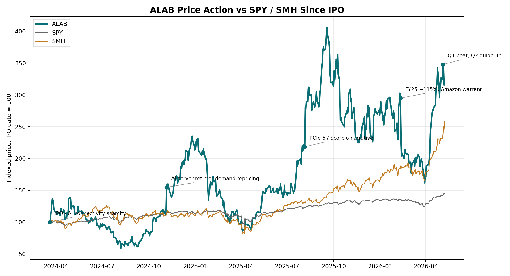
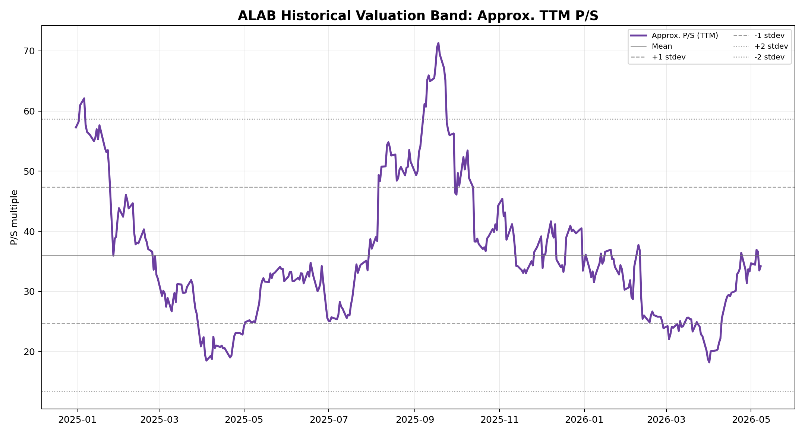
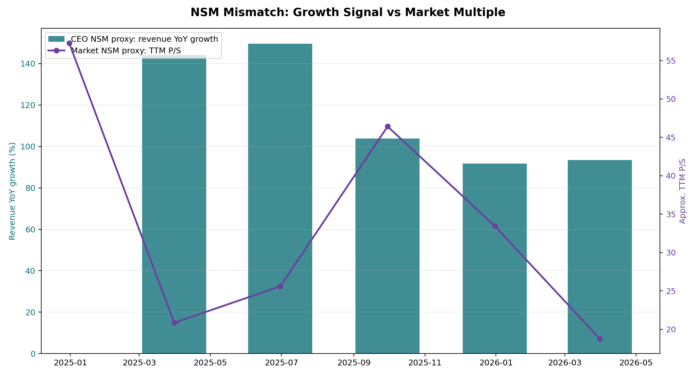

Ticker: ALAB
Date: 2026-05-09
Classification: Watchlist / 等待更清晰的错锚证据
Astera Labs（ALAB）最新状态可以概括为：基本面很强，股价也已经在按“AI 机架级互连平台”而不是“retimer 零部件公司”定价。Q1 2026 收入 $308.4m，同比 +93%，Q2 指引 $355-365m，继续高于市场预期；Scorpio、Aries、Taurus 均贡献增长，且 PCIe Gen 6 收入已超过公司收入三分之一。公司叙事正从 Aries retimer 扩展到 Scorpio scale-up fabric switch、Taurus 以太网线缆模块、Leo CXL memory controller，以及未来 optical/custom solutions。
核心投资问题不是“公司是否优秀”，而是“市场是否仍然锚定错了”。目前看，市场已经明显把 ALAB 放进 AI networking / optical-adjacent 高成长桶：公开一致目标价约 $222-243，财报后多家投行上调目标价，BofA 的公开框架甚至使用 66x 2027E P/E。这说明错误定价机会不明显，除非我们能证明市场仍低估两个东西：一是 Scorpio/UALink 在非 NVIDIA 生态中的结构性份额，二是每个 AI rack / XPU 的硅含量会持续上升且毛利不被大客户条款侵蚀。
本次结论：列入 Watchlist，而不是立即进入下一阶段深研。原因是可验证路径清楚，但当前估值已经反映相当多的好消息，错锚还不够“便宜”。下一步值得做的是客户/架构验证，而不是单纯追财务模型。
| 项目 | 最新状态 |
|---|---|
| 股价 | $199.79（2026-05-08 收盘） |
| 52 周区间 | 约 $76.53-$262.90 |
| 市值 / EV | 约 $34.25bn / $33.10bn |
| TTM 收入 / P/S | $1.00bn / 约 34.2x |
| Forward P/E | 约 48-60x，取决于数据源与 EPS 年份 |
| 空头 | 约 14.44m 股，约 8.4% shares out / 10.2% float |
| 持股结构 | 机构约 67.9%，内部人约 10.8% |
最新财务与经营指标
| 指标 | Q1 2026 |
|---|---|
| 收入 | $308.4m，同比 +93%，环比 +14% |
| GAAP / non-GAAP 毛利率 | 76.3% / 76.4% |
| non-GAAP 经营利润率 | 36.2% |
| non-GAAP EPS | $0.61 |
| 经营现金流 | $74.6m |
| 现金、现金等价物和可出售证券 | $1.18bn |
| Q2 2026 收入指引 | $355-365m，环比 +15-18% |
市场结构与情绪
市场定价锚
市场主锚是远期 P/E 和 P/S，而不是当期 FCF。最新可得深度卖方报告中，UBS（2026-04-20）用 约 47x 2027E P/E × 2027E EPS $3.74 得到 $180 目标价；BofA 财报后公开评论则把目标价上调到 $240，并提到 66x 2027E P/E。这不是传统半导体估值，而是 AI networking/光学相邻高成长资产估值。
同业对比
| 公司 | 市值 | TTM P/S | Forward P/E | TTM 毛利率 | 收入增速 | 估值含义 |
|---|---|---|---|---|---|---|
| ALAB | $34.2bn | 34.2x | 47.8x | 76.0% | 93% | 高成长、高毛利、小体量，已按平台化预期定价 |
| CRDO | $34.8bn | 32.6x | 34.2x | 67.8% | 202% | 最直接互连/高速连接 beta，增速更高但毛利较低 |
| MRVL | $148.8bn | 18.2x | 31.3x | 51.0% | 22% | 更分散的 AI/定制硅/网络组合 |
| MPWR | $78.6bn | 26.6x | 53.1x | 55.2% | 26% | 高质量模拟/电源平台，高 P/E 但成长低于 ALAB |
| AVGO | $2.04tn | 29.8x | 23.7x | 76.7% | 30% | AI 半导体平台化龙头，软件/半导体混合 |
| NVDA | $5.23tn | 24.2x | 19.1x | 71.1% | 73% | AI compute 核心锚，估值反而更低 |
三图包



NSM 框架
| Lens | 本次判断 |
|---|---|
| CEO NSM | 大客户 AI 平台中被部署的互连/交换/线缆/内存连接硅含量，以及客户系统上线速度。公开代理指标：Scorpio/Aries/Taurus 驱动的收入增长、PCIe Gen 6 收入占比、每 XPU 硅含量。 |
| 长期投资者 NSM | 每个关键 AI rack / XPU 的可持续 silicon content × 可跨客户/代际复用的设计 win。关键是从 retimer 迁移到 fabric switch/custom/optical 后，毛利和份额是否可保持。 |
| 市场共识 NSM | 2026/2027 EPS、收入 beat/raise、Scorpio ramp 节奏、远期 P/E。市场短期奖励的是上修，而不是深层客户依赖质量。 |
| mismatch 分类 | 健康滞后与叙事陷阱并存。公司确实在从“器件”走向“系统互连平台”，但市场已经开始按这个新 regime 定价；错锚还没有大到足以直接推进。 |
价值创造到价值捕获链条
AI cluster 更大、更异构 → 数据/内存/网络瓶颈上升 → hyperscaler 需要低延迟、高带宽、可诊断、可管理的互连 → ALAB 通过 Aries/Taurus/Scorpio/Leo + COSMOS 嵌入客户架构 → 设计 win 跨代延续、切换成本上升 → silicon content per XPU/rack 与毛利/现金流提升
这条链条成立的关键不是“AI capex 继续增长”这么宽泛，而是 ALAB 能否在客户架构定义阶段进入关键路径。若只是供应高景气零部件，大客户集中和 price-down 会吞掉平台溢价；若 Scorpio/UALink/定制互连进入多客户机架标准，当前高估值才可能被后续 EPS 修正消化。
上行/下行不对称
分类：Watchlist / 等待更清晰的错锚证据。
对照晋级标准：
因此，ALAB 值得进入观察名单和专题研究池，但不应因“AI 互连主线很强”直接升为错价型优先项目。现在最需要的是证伪客户依赖与毛利质量，而不是再证明行业需求旺盛。
确认信号
证伪信号
../collected_resources/sec/ALAB_latest_10-Q_2026-05-06.txt，../collected_resources/sec/ALAB_latest_10-K_2026-02-20.txt../collected_resources/news/20260509_ALAB_latest_news_summary.md../collected_resources/sell_side/20260509_ALAB_sell_side_synthesis.md../collected_resources/buy_side/20260509_buy_side_synthesis_ALAB.md../collected_resources/podwise/ALAB_podcast_discussion.md../collected_resources/market_data/ALAB_technical_30d.csv../collected_resources/market_data/peer_valuation_yfinance.csv